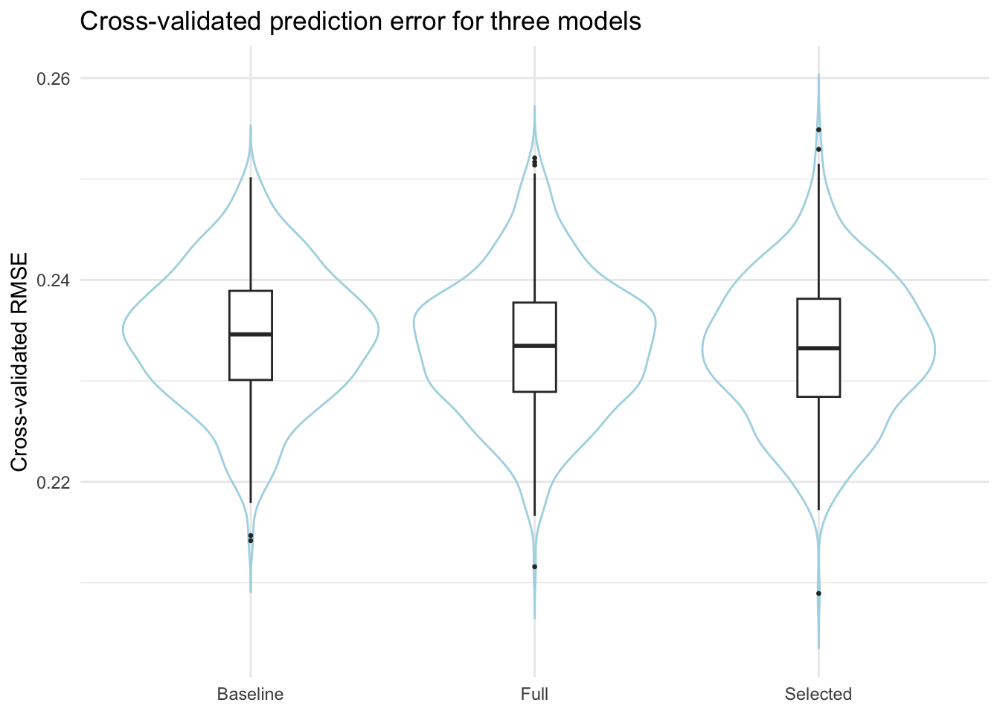

Code & Result
Import Data
# This chunk only need to run in "Console" once, do not run when knitting the file
# devtools::install_github("e-mitchell/meps_r_pkg/MEPS")
# library(MEPS)# Quick check of the total fee variable (totexp23)
summary(fyc23$totexp23)## Min. 1st Qu. Median Mean 3rd Qu. Max.
## 0.0 299.5 1816.0 8422.0 7087.0 574675.0# check if the name of first few variables correct
names(fyc23)[1:30]## [1] "duid" "pid" "dupersid" "panel" "datayear" "famid31"
## [7] "famid42" "famid53" "famid23" "famidyr" "cpsfamid" "fcsz1231"
## [13] "fcrp1231" "ruletr31" "ruletr42" "ruletr53" "ruletr23" "rusize31"
## [19] "rusize42" "rusize53" "rusize23" "ruclas31" "ruclas42" "ruclas53"
## [25] "ruclas23" "famsze31" "famsze42" "famsze53" "famsze23" "fmrs1231"grep("23", names(fyc23), value = TRUE)[1:20]## [1] "famid23" "fcsz1231" "fcrp1231" "ruletr23" "rusize23" "ruclas23"
## [7] "famsze23" "fmrs1231" "fams1231" "region23" "refprs23" "resp23"
## [13] "proxy23" "endrfm23" "endrfy23" "inscop23" "insc1231" "elgrnd23"
## [19] "age23x" "marry23x"nrow(fyc23) ## [1] 18919Clean data “fyc23”
fyc23_clean <- fyc23
# Only keep the individuals with positive weight
fyc23_clean <- fyc23_clean[fyc23_clean$perwt23f > 0, ]
# Change all the missing value (-1, -7, -8, -9, -15) into NA
num_vars <- sapply(fyc23_clean, is.numeric)
for (j in which(num_vars)) {
x <- fyc23_clean[[j]]
x[x %in% c(-1, -7, -8, -9, -15)] <- NA
fyc23_clean[[j]] <- x
}
# Only keep the variables needed for this project (could extend later)
keep_vars <- c(
"dupersid", "panel", "varstr", "varpsu", "perwt23f",
"totexp23", # Total fee
"agelast", "sex", "racethx",
"povcat23", "inscov23"
)
fyc23_clean <- fyc23_clean[ , keep_vars]
# Use cleaned data to rebuild "survey design"
des23 <- svydesign(
ids = ~varpsu,
strata = ~varstr,
weights= ~perwt23f,
data = fyc23_clean,
nest = TRUE
)Demografic Variables
# 2.1 Build blank variable columns
fyc23_clean$age_cat4 <- NA
fyc23_clean$sex_f <- NA
fyc23_clean$race4 <- NA
fyc23_clean$povcat_f <- NA
fyc23_clean$inscov_f <- NA
# 2.2 Age groups：0–17, 18–44, 45–64, 65+
fyc23_clean$age_cat4[fyc23_clean$agelast <= 17] <-
"0-17"
fyc23_clean$age_cat4[fyc23_clean$agelast >= 18 &
fyc23_clean$agelast <= 44] <-
"18-44"
fyc23_clean$age_cat4[fyc23_clean$agelast >= 45 &
fyc23_clean$agelast <= 64] <-
"45-64"
fyc23_clean$age_cat4[fyc23_clean$agelast >= 65] <-
"65+"
fyc23_clean$age_cat4 <- factor(
fyc23_clean$age_cat4,
levels = c("0-17", "18-44", "45-64", "65+")
)
# 2.3 Gender: 1=Male, 2=Female
fyc23_clean$sex_f[fyc23_clean$sex == 1] <- "Male"
fyc23_clean$sex_f[fyc23_clean$sex == 2] <- "Female"
fyc23_clean$sex_f <- factor(
fyc23_clean$sex_f,
levels = c("Male", "Female")
)
# 2.4 Race: NH White, NH Black, Hispanic, NH Asian/Other
fyc23_clean$race4[fyc23_clean$racethx == 1] <- "Hispanic"
fyc23_clean$race4[fyc23_clean$racethx == 2] <- "NH White"
fyc23_clean$race4[fyc23_clean$racethx == 3] <- "NH Black"
fyc23_clean$race4[fyc23_clean$racethx %in% c(4, 5)] <- "NH Asian/Other"
fyc23_clean$race4 <- factor(
fyc23_clean$race4,
levels = c("NH White", "NH Black", "Hispanic", "NH Asian/Other")
)
# 2.5 Poverty line groups (POVCAT23): 1–5
# In MEPS, High income = House income ≥ 4 times federal poverty line,
# not “top 1% / top 10% super rich”, but the population of middle-class and above
pov_labels <- c(
"Poor", "Near-poor", "Low income",
"Middle income", "High income"
)
fyc23_clean$povcat_f <- factor(
fyc23_clean$povcat23,
levels = 1:5,
labels = pov_labels
)
# 2.6 Insurance type (INSCOV23): 1 any private, 2 public only, 3 uninsured
ins_labels <- c("Any private", "Public only", "Uninsured")
fyc23_clean$inscov_f <- factor(
fyc23_clean$inscov23,
levels = 1:3,
labels = ins_labels
)
# 2.7 Use updated data to rebuild "design"
des23 <- svydesign(
ids = ~varpsu,
strata = ~varstr,
weights= ~perwt23f,
data = fyc23_clean,
nest = TRUE
)
# Quick check
svytable(~ age_cat4, des23)## age_cat4
## 0-17 18-44 45-64 65+
## 72310868 118897360 81736013 61586033svytable(~ race4, des23)## race4
## NH White NH Black Hispanic NH Asian/Other
## 191904354 41881236 65759049 34985634svytable(~ povcat_f, des23)## povcat_f
## Poor Near-poor Low income Middle income High income
## 37085125 12759876 40476857 96119086 148089329svytable(~ inscov_f, des23)## inscov_f
## Any private Public only Uninsured
## 215911541 97419962 21198770# Explore the relationship between "agelast" and "age_cat4"
table(fyc23_clean$age_cat4, useNA = "ifany")##
## 0-17 18-44 45-64 65+
## 3556 5543 4756 4608# For each age group, check the minimum/ maximum
tapply(
fyc23_clean$agelast,
fyc23_clean$age_cat4,
function(x) range(x, na.rm = TRUE)
)## $`0-17`
## [1] 0 17
##
## $`18-44`
## [1] 18 44
##
## $`45-64`
## [1] 45 64
##
## $`65+`
## [1] 65 85table(fyc23_clean$racethx, fyc23_clean$race4, useNA = "ifany")##
## NH White NH Black Hispanic NH Asian/Other
## 1 0 0 4087 0
## 2 10112 0 0 0
## 3 0 2448 0 0
## 4 0 0 0 1133
## 5 0 0 0 683table(fyc23_clean$povcat23, fyc23_clean$povcat_f, useNA = "ifany")##
## Poor Near-poor Low income Middle income High income
## 1 2803 0 0 0 0
## 2 0 868 0 0 0
## 3 0 0 2421 0 0
## 4 0 0 0 5145 0
## 5 0 0 0 0 7226table(fyc23_clean$inscov23, fyc23_clean$inscov_f, useNA = "ifany")##
## Any private Public only Uninsured
## 1 10833 0 0
## 2 0 6431 0
## 3 0 0 1199Define Top 1%、Top 5%、Top 10%、Bottom 50%
# Calculate the weighted quantile of "TOTEXP23"
# 3.1 Calculate weighted quantile
exp_cuts <- svyquantile(
~ totexp23,
design = des23,
quantiles = c(0.50, 0.90, 0.95, 0.99),
ci = FALSE
)
exp_cuts # check it when knitting## $totexp23
## 0.5 0.9 0.95 0.99
## [1,] 1583 18330 34150 93443
##
## attr(,"hasci")
## [1] FALSE
## attr(,"class")
## [1] "newsvyquantile"str(exp_cuts)## List of 1
## $ totexp23: num [1, 1:4] 1583 18330 34150 93443
## ..- attr(*, "dimnames")=List of 2
## .. ..$ : NULL
## .. ..$ : chr [1:4] "0.5" "0.9" "0.95" "0.99"
## - attr(*, "hasci")= logi FALSE
## - attr(*, "class")= chr "newsvyquantile"q_vec <- as.numeric(exp_cuts$totexp23)
# quantile of: 0.50, 0.90, 0.95, 0.99
p50 <- q_vec[1] # 0.5 分位数
p90 <- q_vec[2] # 0.9
p95 <- q_vec[3] # 0.95
p99 <- q_vec[4] # 0.99
# Create variable "exp_group"
fyc23_clean$exp_group <- NA
fyc23_clean$exp_group[fyc23_clean$totexp23 >= p99] <- "Top 1%"
fyc23_clean$exp_group[fyc23_clean$totexp23 >= p95 &
fyc23_clean$totexp23 < p99] <- "Top 5%"
fyc23_clean$exp_group[fyc23_clean$totexp23 >= p90 &
fyc23_clean$totexp23 < p95] <- "Top 10%"
fyc23_clean$exp_group[fyc23_clean$totexp23 <= p50] <- "Bottom 50%"
# 50–90%
fyc23_clean$exp_group[
is.na(fyc23_clean$exp_group) &
!is.na(fyc23_clean$totexp23)
] <- "50–90%"
fyc23_clean$exp_group <- factor(
fyc23_clean$exp_group,
levels = c("Bottom 50%", "50–90%", "Top 10%", "Top 5%", "Top 1%")
)
# Use data with "exp_group" to rebuild "design"
des23 <- svydesign(
ids = ~varpsu,
strata = ~varstr,
weights= ~perwt23f,
data = fyc23_clean,
nest = TRUE
)
# Check the weighted number and proportion of people in each expense category
svytable(~ exp_group, des23)## exp_group
## Bottom 50% 50–90% Top 10% Top 5% Top 1%
## 167271763 133802060 16720928 13369123 3366399svytable(~ exp_group, des23) / sum(weights(des23))## exp_group
## Bottom 50% 50–90% Top 10% Top 5% Top 1%
## 0.50001981 0.39996996 0.04998330 0.03996387 0.01006306Clean data “cond23”
# A copy from "cond23"
cond23_clean <- cond23
# Numeric variable: missing value -> NA
num_vars_c <- sapply(cond23_clean, is.numeric)
for (j in which(num_vars_c)) {
x <- cond23_clean[[j]]
x[x %in% c(-1, -7, -8, -9, -15)] <- NA
cond23_clean[[j]] <- x
}
# CCSR (characteristic), column names are: ccsr1x, ccsr2x, ccsr3x, ccsr4x
ccsr_cols <- grep("^ccsr", names(cond23_clean), value = TRUE)
for (nm in ccsr_cols) {
x <- cond23_clean[[nm]]
# Some files using "-1" or "-15" as missing value
x[x %in% c("-1", "-15")] <- NA
cond23_clean[[nm]] <- x
}
# Main CCSR: use "ccsr1x" first, use 2/3/4 when data missing
cond23_clean$ccsr_main <- cond23_clean$ccsr1x
idx_na <- is.na(cond23_clean$ccsr_main) & !is.na(cond23_clean$ccsr2x)
cond23_clean$ccsr_main[idx_na] <- cond23_clean$ccsr2x[idx_na]
idx_na <- is.na(cond23_clean$ccsr_main) & !is.na(cond23_clean$ccsr3x)
cond23_clean$ccsr_main[idx_na] <- cond23_clean$ccsr3x[idx_na]
idx_na <- is.na(cond23_clean$ccsr_main) & !is.na(cond23_clean$ccsr4x)
cond23_clean$ccsr_main[idx_na] <- cond23_clean$ccsr4x[idx_na]
# Only keep the record of the main CCSR is not missing
cond23_clean <- cond23_clean[!is.na(cond23_clean$ccsr_main), ]
# Only keep the variables that will be used later
keep_cond_vars <- c(
"dupersid", "condidx",
"varstr", "varpsu", "perwt23f",
"ccsr_main"
)
cond23_clean <- cond23_clean[ , keep_cond_vars]
# Check the first 10 CCSR
head( sort(table(cond23_clean$ccsr_main), decreasing = TRUE), 10 )##
## CIR007 END010 MUS010 END002 MBD005 MBD002 END001 MUS006 DIG004 RSP009
## 4312 3626 2557 1960 1791 1557 1346 1345 1245 1212Double Check
## 1. Calculate the "Total population" under the survey design
total_pop <- sum(weights(des23))
total_pop## [1] 334530273# Supposed to around the magnitude of 300 million
## 2. The weighted frequency of each variable
tab_age <- svytable(~ age_cat4, des23)
tab_race <- svytable(~ race4, des23)
tab_pov <- svytable(~ povcat_f, des23)
tab_ins <- svytable(~ inscov_f, des23)
## 3. The weighted sum of each variable, should be around total_pop
sum_age <- sum(tab_age)
sum_race <- sum(tab_race)
sum_pov <- sum(tab_pov)
sum_ins <- sum(tab_ins)
c(
total_pop = total_pop,
sum_age = sum_age,
sum_race = sum_race,
sum_pov = sum_pov,
sum_ins = sum_ins
)## total_pop sum_age sum_race sum_pov sum_ins
## 334530273 334530273 334530273 334530273 334530273## 4. Check the difference (should be close to 0, or with small rounding error)
c(
age_minus_total = sum_age - total_pop,
race_minus_total = sum_race - total_pop,
pov_minus_total = sum_pov - total_pop,
ins_minus_total = sum_ins - total_pop
)## age_minus_total race_minus_total pov_minus_total ins_minus_total
## 0 0 0 0## Age distribution: weighted frequency + proportion
tab_age## age_cat4
## 0-17 18-44 45-64 65+
## 72310868 118897360 81736013 61586033prop_age <- prop.table(tab_age)
prop_age## age_cat4
## 0-17 18-44 45-64 65+
## 0.2161564 0.3554158 0.2443307 0.1840970sum(prop_age) # should ≈ 1## [1] 1## Race distribution
tab_race## race4
## NH White NH Black Hispanic NH Asian/Other
## 191904354 41881236 65759049 34985634prop_race <- prop.table(tab_race)
prop_race## race4
## NH White NH Black Hispanic NH Asian/Other
## 0.5736532 0.1251942 0.1965713 0.1045814sum(prop_race) # ≈ 1## [1] 1## Poverty line distribution
tab_pov## povcat_f
## Poor Near-poor Low income Middle income High income
## 37085125 12759876 40476857 96119086 148089329prop_pov <- prop.table(tab_pov)
prop_pov## povcat_f
## Poor Near-poor Low income Middle income High income
## 0.11085731 0.03814266 0.12099609 0.28732553 0.44267841sum(prop_pov) # ≈ 1## [1] 1## Insurance distribution
tab_ins## inscov_f
## Any private Public only Uninsured
## 215911541 97419962 21198770prop_ins <- prop.table(tab_ins)
prop_ins## inscov_f
## Any private Public only Uninsured
## 0.64541705 0.29121419 0.06336876sum(prop_ins) # ≈ 1## [1] 1## Check the sample number of each age group (non-weighted)
table(fyc23_clean$age_cat4, useNA = "ifany")##
## 0-17 18-44 45-64 65+
## 3556 5543 4756 4608## Check the minimum/maximum of "agelast" in each age group
tapply(
fyc23_clean$agelast,
fyc23_clean$age_cat4,
function(x) range(x, na.rm = TRUE)
)## $`0-17`
## [1] 0 17
##
## $`18-44`
## [1] 18 44
##
## $`45-64`
## [1] 45 64
##
## $`65+`
## [1] 65 85## racethx -> race4, mapping table
table(fyc23_clean$racethx, fyc23_clean$race4, useNA = "ifany")##
## NH White NH Black Hispanic NH Asian/Other
## 1 0 0 4087 0
## 2 10112 0 0 0
## 3 0 2448 0 0
## 4 0 0 0 1133
## 5 0 0 0 683## povcat23 -> povcat_f
table(fyc23_clean$povcat23, fyc23_clean$povcat_f, useNA = "ifany")##
## Poor Near-poor Low income Middle income High income
## 1 2803 0 0 0 0
## 2 0 868 0 0 0
## 3 0 0 2421 0 0
## 4 0 0 0 5145 0
## 5 0 0 0 0 7226## inscov23 -> inscov_f
table(fyc23_clean$inscov23, fyc23_clean$inscov_f, useNA = "ifany")##
## Any private Public only Uninsured
## 1 10833 0 0
## 2 0 6431 0
## 3 0 0 1199## Weighted frequency of expense groups
tab_exp <- svytable(~ exp_group, des23)
tab_exp## exp_group
## Bottom 50% 50–90% Top 10% Top 5% Top 1%
## 167271763 133802060 16720928 13369123 3366399## Weighted proportion of expense groups
prop_exp <- prop.table(tab_exp)
prop_exp## exp_group
## Bottom 50% 50–90% Top 10% Top 5% Top 1%
## 0.50001981 0.39996996 0.04998330 0.03996387 0.01006306sum(prop_exp) # ≈ 1## [1] 1Regression Model
Quantify how demographics, socioeconomic status, and medical conditions are associated with belonging to the high-cost group.
library(dplyr)
library(ggplot2)
library(tidyr)
library(purrr)
library(survey)# create n_ccsr to record multi-morbidity
person_ccsr <- cond23_clean %>%
group_by(dupersid) %>%
summarise(
n_ccsr = n_distinct(ccsr_main), # number of diseases with different CCSR
.groups = "drop"
) %>%
mutate(
multi_morbidity = if_else(n_ccsr >= 3, 1, 0) # threshold can be customized
)Add a few binary disease index for regression covariates.
ccsr_counts <- cond23_clean %>%
count(ccsr_main, sort = TRUE)
head(ccsr_counts,10)## # A tibble: 10 × 2
## ccsr_main n
## <chr> <int>
## 1 CIR007 4312
## 2 END010 3626
## 3 MUS010 2557
## 4 END002 1960
## 5 MBD005 1791
## 6 MBD002 1557
## 7 END001 1346
## 8 MUS006 1345
## 9 DIG004 1245
## 10 RSP009 1212ccsr_top20 <- ccsr_counts %>%
slice_max(n, n = 20)
ggplot(ccsr_top20,
aes(x = reorder(ccsr_main, n),
y = n)) +
geom_col() +
coord_flip() +
labs(
x = "CCSR category",
y = "Number of condition records",
title = "Top 20 most common CCSR condition categories (unweighted)"
)
# recheck using weight
ccsr_w_counts <- cond23_clean %>%
group_by(ccsr_main) %>%
summarise(
w_count = sum(perwt23f, na.rm = TRUE),
.groups = "drop"
) %>%
arrange(desc(w_count))
ccsr_w_top20 <- ccsr_w_counts %>%
slice_max(w_count, n = 20)
ggplot(ccsr_w_top20,
aes(x = reorder(ccsr_main, w_count),
y = w_count)) +
geom_col() +
coord_flip() +
labs(
x = "CCSR category",
y = "Weighted count of conditions",
title = "Top 20 CCSR condition categories (weighted by PERWT23F)"
)
# compare top 10 ccsr
data.frame(
unweighted_top10 = ccsr_counts$ccsr_main[1:10],
weighted_top10 = ccsr_w_counts$ccsr_main[1:10]
)## unweighted_top10 weighted_top10
## 1 CIR007 CIR007
## 2 END010 END010
## 3 MUS010 MUS010
## 4 END002 MBD005
## 5 MBD005 END002
## 6 MBD002 MBD002
## 7 END001 END001
## 8 MUS006 RSP009
## 9 DIG004 INJ031
## 10 RSP009 MUS006ccsr_union <- union(ccsr_counts$ccsr_main[1:10], ccsr_w_counts$ccsr_main[1:10])
ccsr_union## [1] "CIR007" "END010" "MUS010" "END002" "MBD005" "MBD002" "END001" "MUS006"
## [9] "DIG004" "RSP009" "INJ031"ccsr_main_values <- unique(cond23_clean$ccsr_main)
# create binary variable for each ccsr in ccsr_union
for (disease in ccsr_union) {
var_name <- disease
# check whether the person has that disease
person_ccsr[[var_name]] <- ifelse(
person_ccsr$dupersid %in% cond23_clean$dupersid[cond23_clean$ccsr_main == disease],
1,
0
)
}fyc23_model <- fyc23_clean %>%
left_join(person_ccsr, by = "dupersid") %>%
mutate(high_cost = ifelse(exp_group == "Top 5%", 1, 0))
# set outcome variable as 'whether the person is in the top 5% expenses group'
des_model <- svydesign(
ids = ~varpsu,
strata = ~varstr,
weights = ~perwt23f,
data = fyc23_model,
nest = TRUE
)Feature Selection
# baseline model
baseline_formula <- high_cost ~
age_cat4 + sex_f + race4 + povcat_f + inscov_f + n_ccsr
model_baseline <- svyglm(
baseline_formula,
design = des_model,
family = quasibinomial()
)
summary(model_baseline)##
## Call:
## svyglm(formula = baseline_formula, design = des_model, family = quasibinomial())
##
## Survey design:
## svydesign(ids = ~varpsu, strata = ~varstr, weights = ~perwt23f,
## data = fyc23_model, nest = TRUE)
##
## Coefficients:
## Estimate Std. Error t value Pr(>|t|)
## (Intercept) -4.104708 0.227373 -18.053 < 2e-16 ***
## age_cat418-44 -0.007022 0.237934 -0.030 0.97650
## age_cat445-64 0.677880 0.220487 3.074 0.00253 **
## age_cat465+ 0.480386 0.225351 2.132 0.03474 *
## sex_fFemale -0.213897 0.098997 -2.161 0.03239 *
## race4NH Black 0.022008 0.157238 0.140 0.88888
## race4Hispanic -0.163021 0.132912 -1.227 0.22201
## race4NH Asian/Other -0.067057 0.168351 -0.398 0.69099
## povcat_fNear-poor -0.060137 0.191515 -0.314 0.75397
## povcat_fLow income -0.157595 0.219433 -0.718 0.47381
## povcat_fMiddle income -0.210476 0.161846 -1.300 0.19553
## povcat_fHigh income -0.061194 0.160228 -0.382 0.70309
## inscov_fPublic only -0.032550 0.086140 -0.378 0.70609
## inscov_fUninsured -0.937976 0.464114 -2.021 0.04515 *
## n_ccsr 0.214228 0.011780 18.185 < 2e-16 ***
## ---
## Signif. codes: 0 '***' 0.001 '**' 0.01 '*' 0.05 '.' 0.1 ' ' 1
##
## (Dispersion parameter for quasibinomial family taken to be 0.8830159)
##
## Number of Fisher Scoring iterations: 6# full model
ccsr_vars <- c("CIR007","END010","MUS010","END002","MBD005", "MBD002","END001","MUS006","DIG004","RSP009","INJ031")
full_formula <- update(
baseline_formula,
paste(". ~ . +", paste(ccsr_vars, collapse = " + "))
)
model_full <- svyglm(
full_formula,
design = des_model,
family = quasibinomial()
)
summary(model_full)##
## Call:
## svyglm(formula = full_formula, design = des_model, family = quasibinomial())
##
## Survey design:
## svydesign(ids = ~varpsu, strata = ~varstr, weights = ~perwt23f,
## data = fyc23_model, nest = TRUE)
##
## Coefficients:
## Estimate Std. Error t value Pr(>|t|)
## (Intercept) -4.142628 0.228470 -18.132 < 2e-16 ***
## age_cat418-44 0.102474 0.240611 0.426 0.670882
## age_cat445-64 0.831983 0.217967 3.817 0.000207 ***
## age_cat465+ 0.594221 0.231250 2.570 0.011292 *
## sex_fFemale -0.156823 0.109086 -1.438 0.152913
## race4NH Black -0.042759 0.167079 -0.256 0.798411
## race4Hispanic -0.224776 0.135783 -1.655 0.100218
## race4NH Asian/Other -0.093139 0.172478 -0.540 0.590104
## povcat_fNear-poor -0.078894 0.199010 -0.396 0.692427
## povcat_fLow income -0.148990 0.220808 -0.675 0.501016
## povcat_fMiddle income -0.232388 0.159920 -1.453 0.148556
## povcat_fHigh income -0.088322 0.158463 -0.557 0.578221
## inscov_fPublic only -0.021281 0.088128 -0.241 0.809563
## inscov_fUninsured -0.948724 0.462411 -2.052 0.042177 *
## n_ccsr 0.266333 0.015616 17.056 < 2e-16 ***
## CIR007 -0.194120 0.120247 -1.614 0.108842
## END010 -0.443579 0.116416 -3.810 0.000212 ***
## MUS010 -0.167892 0.102078 -1.645 0.102402
## END002 0.335854 0.099413 3.378 0.000959 ***
## MBD005 -0.377359 0.147979 -2.550 0.011912 *
## MBD002 -0.398973 0.146619 -2.721 0.007383 **
## END001 -0.342818 0.137000 -2.502 0.013559 *
## MUS006 0.002394 0.141474 0.017 0.986525
## DIG004 -0.031370 0.141049 -0.222 0.824340
## RSP009 -0.363132 0.141636 -2.564 0.011472 *
## INJ031 -0.125316 0.150305 -0.834 0.405932
## ---
## Signif. codes: 0 '***' 0.001 '**' 0.01 '*' 0.05 '.' 0.1 ' ' 1
##
## (Dispersion parameter for quasibinomial family taken to be 0.8593806)
##
## Number of Fisher Scoring iterations: 6# model with selected significant variables
selected_vars <- c(
"age_cat4",
"sex_f",
"inscov_f",
"n_ccsr",
"END010","END002","MBD005","MBD002","END001","RSP009"
)
full_formula2 <- as.formula(
paste("high_cost ~", paste(selected_vars, collapse = " + "))
)
model_selected <- svyglm(
full_formula2,
design = des_model,
family = quasibinomial()
)
summary(model_selected)##
## Call:
## svyglm(formula = full_formula2, design = des_model, family = quasibinomial())
##
## Survey design:
## svydesign(ids = ~varpsu, strata = ~varstr, weights = ~perwt23f,
## data = fyc23_model, nest = TRUE)
##
## Coefficients:
## Estimate Std. Error t value Pr(>|t|)
## (Intercept) -4.31773 0.20571 -20.989 < 2e-16 ***
## age_cat418-44 0.08445 0.24168 0.349 0.727272
## age_cat445-64 0.78462 0.22112 3.548 0.000524 ***
## age_cat465+ 0.54424 0.22584 2.410 0.017221 *
## sex_fFemale -0.15467 0.10382 -1.490 0.138489
## inscov_fPublic only -0.03556 0.08779 -0.405 0.686059
## inscov_fUninsured -1.02154 0.46093 -2.216 0.028245 *
## n_ccsr 0.25654 0.01327 19.329 < 2e-16 ***
## END010 -0.48358 0.11477 -4.214 4.41e-05 ***
## END002 0.31291 0.09915 3.156 0.001949 **
## MBD005 -0.34744 0.14565 -2.385 0.018365 *
## MBD002 -0.37714 0.14576 -2.587 0.010662 *
## END001 -0.32440 0.13471 -2.408 0.017301 *
## RSP009 -0.34996 0.14209 -2.463 0.014956 *
## ---
## Signif. codes: 0 '***' 0.001 '**' 0.01 '*' 0.05 '.' 0.1 ' ' 1
##
## (Dispersion parameter for quasibinomial family taken to be 0.8704885)
##
## Number of Fisher Scoring iterations: 6AIC(model_baseline)## eff.p AIC deltabar
## 17.758600 4840.253423 1.268471AIC(model_full)## eff.p AIC deltabar
## 31.453566 4796.998920 1.258143AIC(model_selected)## eff.p AIC deltabar
## 16.489108 4780.365412 1.268393# cv validation
cv_rmse <- function(formula, data, K = 5) {
n <- nrow(data)
folds <- sample(rep(1:K, length.out = n))
rmse_vec <- numeric(K)
for (k in 1:K) {
train <- data[folds != k, ]
test <- data[folds == k, ]
fit <- glm(formula, data = train, family = binomial())
p_hat <- predict(fit, newdata = test, type = "response")
# RMSE between predicted probability and actual 0/1
rmse_vec[k] <- sqrt(mean((p_hat - test$high_cost)^2))
}
rmse_vec
}set.seed(1234)
n_rep <- 100
K <- 5
df_cv <- fyc23_model %>%
select(
high_cost,
age_cat4, sex_f, race4, povcat_f, inscov_f, n_ccsr,
CIR007, END010, MUS010, END002, MBD005, MBD002, END001, MUS006, DIG004, RSP009, INJ031
)%>%
drop_na() %>%
mutate(
high_cost = as.numeric(high_cost),
)
cv_results <- map_dfr(1:n_rep, ~{
tibble(
model = "Baseline",
rmse = cv_rmse(baseline_formula, df_cv, K = K)
) %>%
bind_rows(
tibble(
model = "Full",
rmse = cv_rmse(full_formula, df_cv, K = K)
),
tibble(
model = "Selected",
rmse = cv_rmse(full_formula2, df_cv, K = K)
)
)
})cv_summary <- cv_results %>%
group_by(model) %>%
summarise(mean_rmse = mean(rmse)) %>%
arrange(model)
cv_summary## # A tibble: 3 × 2
## model mean_rmse
## <chr> <dbl>
## 1 Baseline 0.234
## 2 Full 0.234
## 3 Selected 0.233ggplot(cv_results, aes(x = model, y = rmse)) +
geom_violin(trim = FALSE, fill = NA, color = "lightblue") +
geom_boxplot(width = 0.15, fill = "white", outlier.size = 0.5) +
labs(
x = NULL,
y = "Cross-validated RMSE",
title = "Cross-validated prediction error for three models"
) +
theme_minimal()